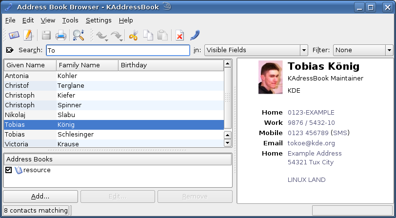

After you have started KAddressBook (either using one of the KDE application launchers Kickoff, the classic menu or Lancelot Launcher, or by typing kaddressbook at the command prompt or by using the Contacts tab in Kontact) the KAddressBook main window will be displayed:

The KAddressBook main window.